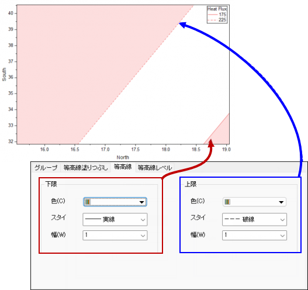

PD-Dialog-ContourLines-Tab
このタブを使用して、重ね合わせ等高線プロットの等高線をカスタマイズできます。

線の色を、個々の等高線またはプロット全体で指定できます。色の選択については、 データプロットの色を編集する を参照してください。
低および高レベルの等高線の線スタイルを選択できます。デフォルトでは、低レベルの等高線は実線で、高レベルの等高線は破線です。
等高線の線幅を指定します。